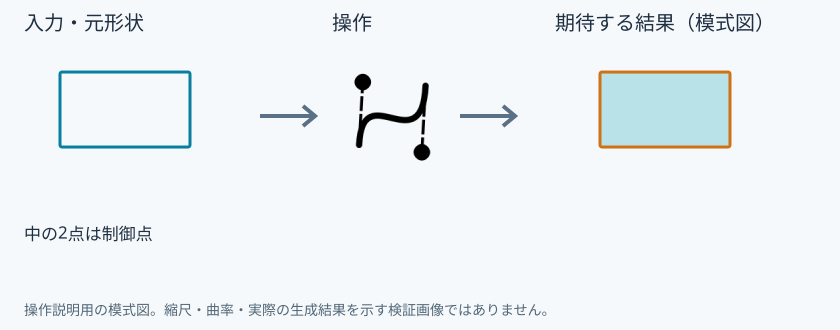
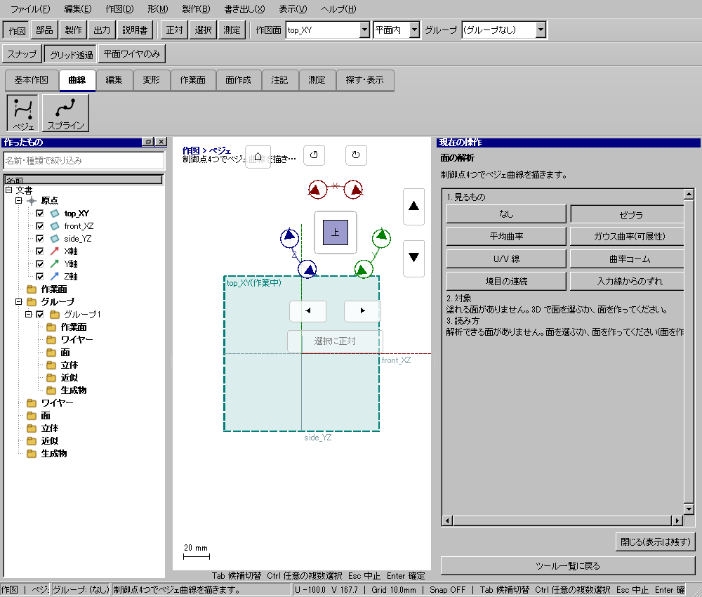

ベジェ
具体例: 両端の向きを調整できる曲線を作る

準備
top_XYに正対する
操作手順
- ベジェを選ぶ
- (0,0),(5,10),(15,10),(20,0)の順に4点を置く
設定: 中の2点は制御点
結果を確認
両端を結び、制御点でふくらみを調整する3次曲線ができる。
取消・やり直し
未確定入力をEscで取り消します。道具を終えるときは選択(V)または別の道具へ切り替えます。 確定済みの文書変更はCtrl+Z、やり直しはCtrl+Yです。保存・書出し済みのファイルはUndoの対象ではありません。
進めない場合
制御点4つでベジェ曲線を描きます。
対象欄と3Dの強調を照合し、必要な線・面・部品を各役割へ指定します。処理中は計算表示を確認し、取消が可能な処理は取消を使います。
Windows版の操作画面
